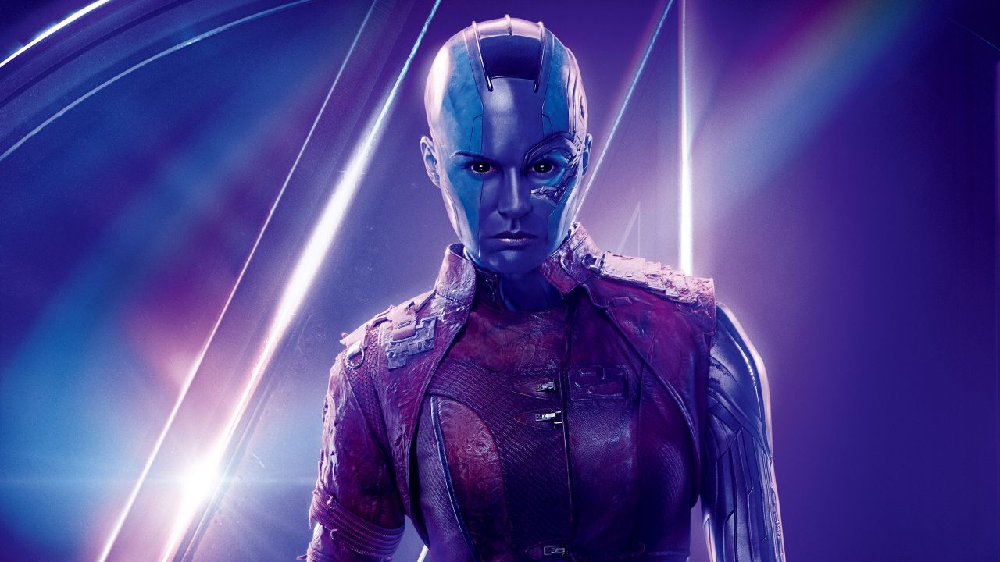

All characters in Avengers-Infinity War
If you are looking to watch Avengers infinity war and worried about what characters are in the film, this is a good place to start catching up. We are listing down all the characters and where they stand just before the bigger bad of MCU Thanos comes in to the picture in quest of infinity stones.
Tony Stark/ Iron Man (Robert Downey, Jr.)
Genius billionaire philanthropist and head honcho of Stark Industries. Currently in a bad phase with his friend Steve rogers after end of civil war events.
Steve Rogers/ Captain America (Chris Evans)
Super soldier serum has made Steve Rogers stronger from outside, who fought and sacrificed himself during WWII. After spending 70 years frozen in the Arctic, Cap returned to a very different world with the idealism of a different era. Currently took a stand for his best friend and parted ways from avengers and Tony Stark.
Thor Odinson (Chris Hemsworth)
Alien slash god of thunder from Asgard. Currently lost his home world Asgard after fighting his evil sister and is the first point of contact to Thanos.
Bruce Banner / Hulk (Mark Ruffalo)
One of the smartest men in the world (a match made in heaven for Stark) and the most dangerous when he gets angry. Currently hates planet earth and last seen with Thor fighting big monsters.
Natasha Romanoff / Black Widow (Scarlett Johansson)
Former secret agent who ended up working for S.H.I.E.L.D. and then fighting with the Avengers. Currently with Steve Rogers and underground avengers.
T'Challa / Black Panther (Chadwick Boseman)

King of Wakanda , dubious of the rest of the world but willingly sharing his country's secrets. Just saved his home world Wakanda from civil war and his evil cousin Killmonger
Peter Parker / Spider-Man (Tom Holland)
super-smart student from Queens, who is in a father-son like relationship with Tony Stark, mentor. A teen!
Steven Strange/ Doctor Strange (Benedict Cumberbatch)
Former secret agent who ended up working for S.H.I.E.L.D. and then fighting with the Avengers. Currently with Steve Rogers and underground avengers.
James Rhodes - War Machine (Don Cheadle)
Best friend and co-pilot of Tony Stark. Injured physically and emotionally by a heavy fall in Civil War and still nursing both types of wounds.
Sam Wilson a.k.a. Falcon (Anthony Mackie)
Cap’s sidekick, sort of, was previously part of a secret mission. Currently with steve rogers and underground avengers
Vision (Paul Bettany)

The result of combining Jarvis (Stark's former electronic butler) Ultron (a sentient computer intent on destroying humanity) and an has an Infinity stone (specifically the Mind Stone). Possible threat to his life as Thanos is in quest of stones
Wanda Maximoff a.k.a. Scarlet Witch (Elizabeth Olsen)
Sakovian immigrant with supernatural abilities whose brother was killed in Avengers: Age of Ultron. She and Vision have a thing in civil war. Currently on the opposite side with steve rogers.
Thanos (Josh Brolin)
Titan warlord on a quest to gather all six Infinity Stones. Adoptive father of Gamora and Nebula. Has habit of capturing home worlds of people and destroying half the population in the name of balancing the universe.
James Buchanan "Bucky" Barnes a.k.a / Winter Soldier (Sebastian Stan)

Steve Rogers' best friend since childhood, who was presumed K.I.A. during the war but was saved and weaponized for terrorist organization Hydra. Severely traumatized now and recovering in Wakanda.
Loki Odinson (Tom Hiddleston)
God of mischief, Game at the best of times, murderous at the worst. But currently having lovable moment with his brother thor before arrival of thanos’s ship
Peter Quill- Star-Lord (Chris Pratt)
Cocky space cowboy with daddy issues and a huge crush on Gamora. Who saved the galaxy two times with his new family.
Gamora (Zoe Saldana)
The last known surviving member of the Zehoberei who were killed by Thanos. Best daughter of thanos. Gamora was an assassin before joining the Guardians and had a bit of a rough relationship with her sister, Nebula.
Drax the Destroyer (Dave Bautista)
Joined the Guardians after losing his wife and child and continues to fight with Star-Lord, Rocket, Groot, and Gamora. Homies with Mantis.
89P13 a.k.a. Rocket Raccoon (Bradley Cooper)
Genetically enhanced animal, but more importantly an intergalactic scavenger. Broke from the gang temporarily during Vol. 2 but ultimately came back to help defeat Ego.
Groot (Vin Diesel)

A tree-like being and indispensable part of the Guardians' crew. Also a teen!
Mantis (Pom Klementieff)
Raised by Ego but now with the Guardians of the Galaxy, Mantis is an exceptionally empathic alien who detects the thoughts and emotions of others. This can lead to embarrassing situations
Nebula (Karen Gillam)
A former enemy of the Guardians while aiding Ronan, she joined them after assisting in the mutiny against Yondu. Has talked a big game about murdering her sister but never actually done it; now on a quest to find Thanos.
Taneleer Tivan a.k.a. The Collector (Benicio Del Toro)

As his title suggests, one seeking to acquire as many unique items as possible from around the universe. Currently in possession of the Reality Stone and on the hunt for more.
Heimdall (Idris Elba)
All-seeing Asgardian who used to operate the Bifrost and beam people between worlds. Eventually Loki fired him and he fled Asgard with Thor after Hela's attack in Ragnarok.
Okoye (Danai Gurira)
Head of Wakanda's Dora Milaje soldiers who will take literally no shit from anyone
Shuri (Letitia Wright)
T'Challa's genius younger sister who we suspect might give Tony Stark a run for his money. As Wakanda shares the secrets of vibranium, the world will need Shuri's expertise.
M'Baku (Winston Duke)
Head of Wakanda's Jabari tribe Gave T'Challa some trouble in Black Panther, but now he's joined the fight.
Happy Hogan (Jon Favreau)
Tony Stark's most loyal employee (specific roles include chauffeur, head of security, confidante) and Peter Parker's elusive mentorship liaison.
Wong (Benedict Wong)
One of Strange's trainers at Kamar-Taj, where he first met the Ancient One and began his journey. Wong is a master of the mystical arts that Strange studies.
Pepper Potts (Gwyneth Paltrow)
The only woman who managed to cope up with Stark’s nature and run his business while he's running around in that suit. Last seen she was being proposed by stark in spiderman homecoming.